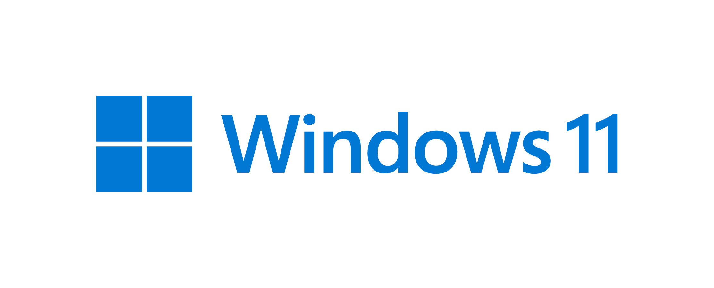

Como Instalar o Windows 11

Para instalar o Windows 11 em seu computador, você precisará criar uma pen de boot. Uma pen de boot é um dispositivo de armazenamento externo, como um pendrive USB, contendo os arquivos de instalação do sistema operacional.
Para criar uma pen de boot do Windows 11, siga os passos abaixo:
- Verifique se você possui um pendrive USB com capacidade suficiente (pelo menos 8 GB).
- Faça o download da imagem ISO do Windows 11 no site oficial da Microsoft.
- Conecte o pendrive USB ao seu computador.
- Utilize uma ferramenta de criação de pen de boot, como o Windows USB/DVD Download Tool ou o Rufus, para criar a pen de boot. Siga as instruções fornecidas pela ferramenta escolhida.
- Após criar a pen de boot, reinicie o computador.
- Acesse a configuração de inicialização do computador (normalmente pressionando uma tecla específica, como F12 ou Del, durante a inicialização) e altere a ordem de inicialização para que o pendrive USB seja o primeiro dispositivo de inicialização.
- Salve as alterações e reinicie o computador novamente.
- O computador será iniciado a partir do pendrive USB e você poderá seguir as instruções na tela para instalar o Windows 11.
Lembre-se de que a criação de uma pen de boot exige cuidado, pois todos os dados no pendrive serão apagados durante o processo. Certifique-se de fazer backup de quaisquer arquivos importantes antes de prosseguir.